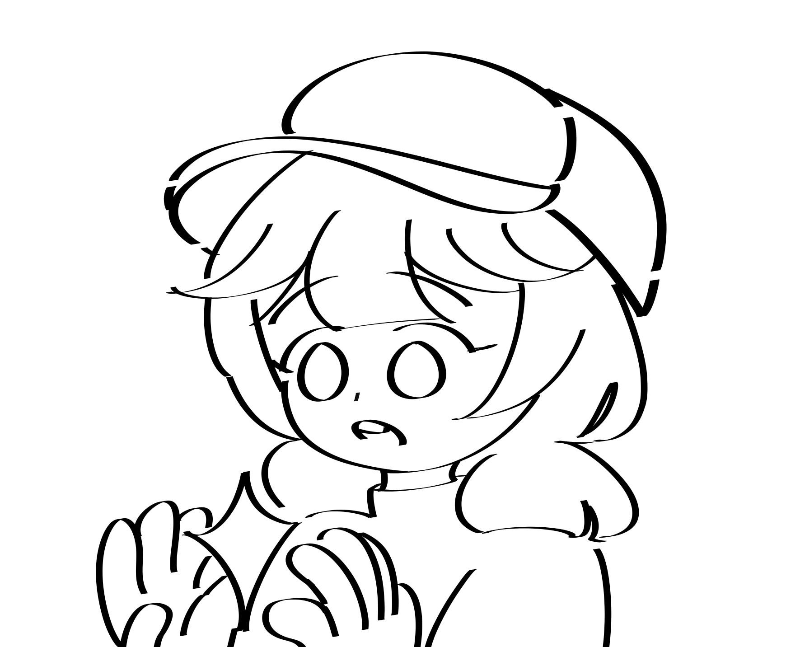

Seni Digital vs. Seni Tradisional: Duel Antar Generasi
Minggu, 12 November 2023
by Shallmondtuna

Dalam dunia seni, persaingan antara seni digital dan seni tradisional semakin memanas.
Kamu mungkin pernah bertanya-tanya, mana yang lebih baik?
Mari kita eksplorasi perbedaan antara seni digital dan seni tradisional, dan mengapa keduanya patut dihargai.
Apa itu seni tradisional?
Seni tradisional adalah seni yang diciptakan dengan alat-alat konvensional, seperti pensil, cat air, pensil warna, kanvas, dan kertas. Seni ini sering dikaitkan dengan teknik manual, seperti menggambar, melukis, dan mengukir. Karya seni ini cenderung unik karena tiap goresan yang dibuat pelukis atau
pegiat seni tidak dapat diulang. Menghasilkan keunikan tiap karya yang dihasilkan.
Apa itu seni digital?
Seni digital adalah seni yang diciptakan dengan bantuan teknologi komputer dan perangkat lunak khusus. Seniman digital menggunakan perangkat
seperti tablet grafis, gadget layar sentuh dengan menggunakan perangkat lunak atau aplikasi
yang dapat mendukung kebutuhan menggambar, melukis, bahkan mematung.
Seni digital cenderung lebih fleksibel karena dalam penerapannya lebih disesuaikan dengan beragam
kebutuhan pegiat seni, dan disediakan fitur-fitur menarik yang dapat dilakukan menggunakan aplikasi.
Seperti buat animasi 2D maupun 3D, dan semacamnya.
Jadi, mana yang lebih baik, seni digital atau seni tradisional?
Jawabannya adalah keduanya berharga.
Ini adalah dua bentuk seni yang berbeda yang menawarkan cara yang berbeda untuk mengekspresikan diri. Beberapa seniman mungkin memilih satu dari keduanya, sementara yang lain memadukan keduanya. Y
ang paling penting adalah apresiasi terhadap kreativitas dan ekspresi dalam semua bentuknya, apa pun media yang dipilih seniman.